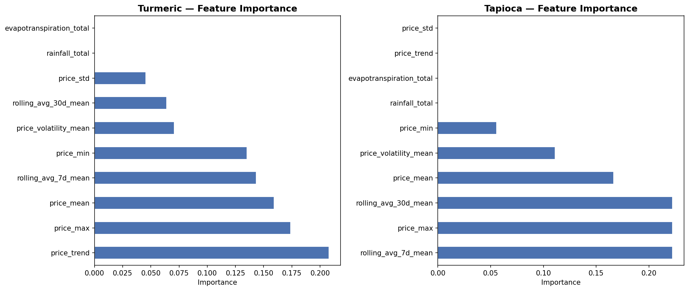

2024 Turmeric Erode
Current Season Outlook
4-wk Horizon
7,141 kg/ha
8-wk Horizon
7,150 kg/ha
12-wk Horizon
7,144 kg/ha
* Predictions indicate a marginal decline due to irregular monsoon onset in the western ghats region.
Multi-Horizon Forecasting · Erode Turmeric · 2016–2024

RF chart image not found. Run the model pipeline to generate
rf_feature_importance.png.
Current Season Outlook
* Predictions indicate a marginal decline due to irregular monsoon onset in the western ghats region.
Region Benchmark
4-wk Pred
26,309
8-wk Pred
26,309
12-wk Pred
26,322
Actual
26,243